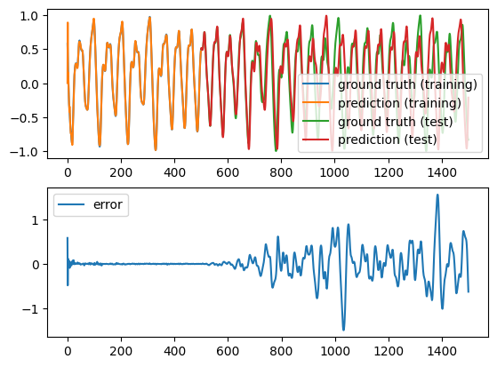

import numpy as np
import matplotlib.pyplot as plt
import water_tank as wtMackey-Glass autoregression
N_in = 1 # number of inputs
N_out = 1 # number of outputs
N = 200 # number of neurons
g = 1.25 # scaling factor
tau = 3.3 # time constant
sparseness = 0.1 # sparseness of the recurrent weightsclass RC(object):
def __init__(self, N, N_in, N_out, g, tau, sparseness):
# Input population
self.inp = wt.StaticInput(size=N_in)
# Reservoir
self.rc = wt.Reservoir(size=N, tau=tau)
# Readout
self.readout = wt.LinearReadout(size=N_out)
# Input projection
self.inp_proj = wt.connect(
pre=self.inp,
post=self.rc,
weights=wt.Bernouilli([-1.0, 1.0], p=0.5),
bias=wt.Bernouilli([-1.0, 1.0], p=0.5), # very important
sparseness=0.1
)
# Recurrent projection
self.rec_proj = wt.connect(
pre=self.rc,
post=self.rc,
weights=wt.Normal(0.0, g/np.sqrt(sparseness*N)),
bias=None,
sparseness=sparseness)
# Readout projection
self.readout_proj = wt.connect(
pre = self.rc,
post = self.readout,
weights = wt.Uniform(-0.01, 0.01), # very small but not zero
bias=wt.Const(0.0), # learnable bias
sparseness=1.0 # readout should be dense
)
# Feedback projection
#self.feedback_proj = wt.connect(self.readout, self.rc, wt.Uniform(-1.0, 1.0))
# Learning rules
#self.learningrule = wt.DeltaLearningRule(projection=self.readout_proj, learning_rate=0.01)
self.learningrule = wt.RLS(projection=self.readout_proj, delta=1e-6)
# Recorder
self.recorder = wt.Recorder()
@wt.measure
def train(self, X, Y, warmup=0):
for t, (x, y) in enumerate(zip(X, Y)):
# Inputs/targets
self.inp.set(x)
# Steps
self.rc.step()
self.readout.step()
# Learning
if t >= warmup: self.learningrule.step(target=y)
# Recording
self.recorder.record({
'rc': self.rc.output(),
'readout': self.readout.output(),
})
@wt.measure
def autoregressive(self, duration):
for _ in range(duration):
# Autoregressive input
self.inp.set(self.readout.output())
# Steps
self.rc.step()
self.readout.step()
# Recording
self.recorder.record({
'rc': self.rc.output(),
'readout': self.readout.output()
})from reservoirpy.datasets import mackey_glass
# Mackey-Glass chaotic time series
T = 2000
mg = mackey_glass(T)
mg = 2.0 * (mg - mg.min()) / (mg.max() - mg.min()) - 1.0
X = mg[:-1, 0]
Y = mg[1:, 0]net = RC(N, N_in, N_out, g, tau, sparseness)
# Training / test
d_train = 500
d_test = 1000
# Supervised training
net.train(X[:d_train], Y[:d_train], warmup=0)
data_train = net.recorder.get()
# Autoregressive test
net.autoregressive(duration=d_test)
data_test = net.recorder.get()Execution time: 716 ms
Execution time: 27 msplt.figure()
plt.title("Autoregression")
plt.subplot(211)
plt.plot(Y[:d_train], label='ground truth (training)')
plt.plot(data_train['readout'][:, 0], label='prediction (training)')
plt.plot(np.linspace(d_train, d_train+d_test, d_test), Y[d_train:d_train+d_test], label='ground truth (test)')
plt.plot(np.linspace(d_train, d_train+d_test, d_test), data_test['readout'][:, 0], label='prediction (test)')
plt.legend()
plt.subplot(212)
plt.plot(Y[:d_train+d_test] - np.concatenate((data_train['readout'][:, 0], data_test['readout'][:, 0])), label='error')
plt.legend()
plt.show()/var/folders/6w/6msx49ws7k13cc0bbys0tt4m0000gn/T/ipykernel_33855/2895089909.py:3: MatplotlibDeprecationWarning: Auto-removal of overlapping axes is deprecated since 3.6 and will be removed two minor releases later; explicitly call ax.remove() as needed.
plt.subplot(211)